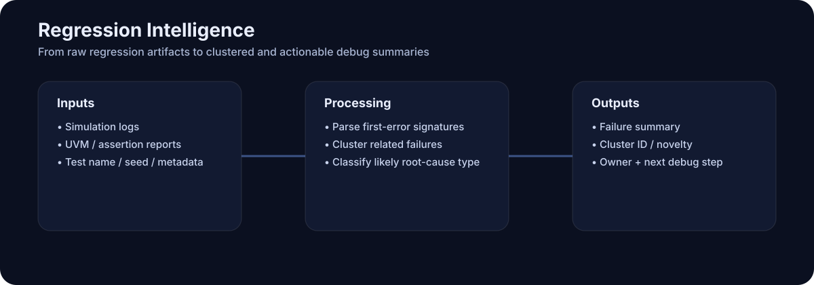
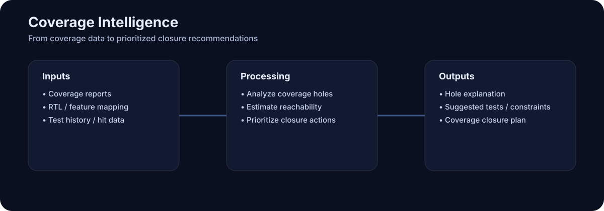
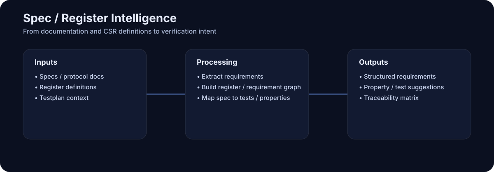
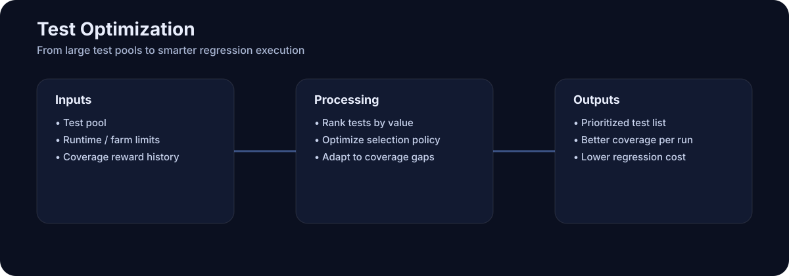
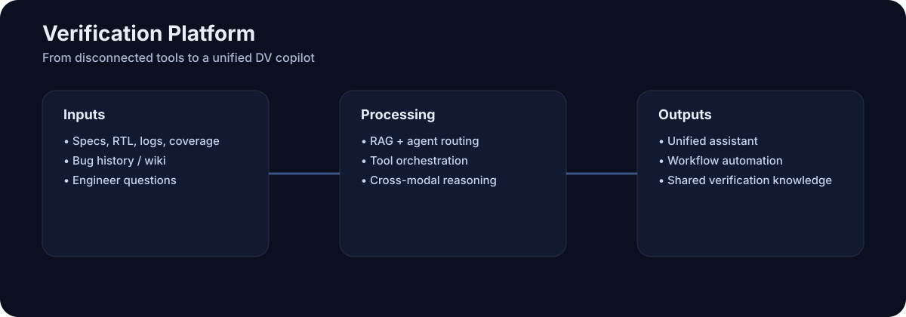
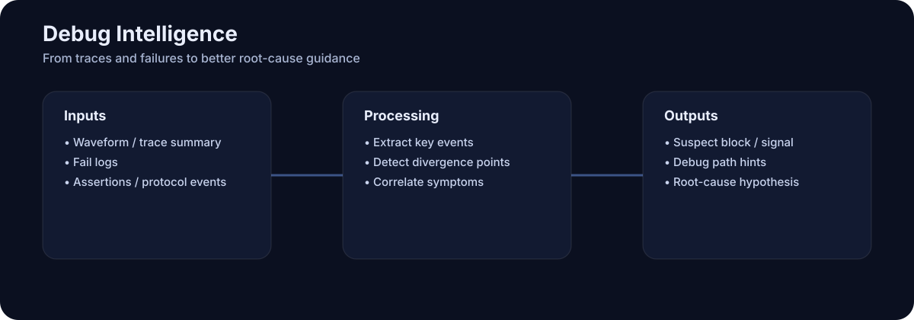

AI 与 Design Verification：详细工程文档
本文聚焦于如何将 设计验证（Design Verification, DV） 与 AI / LLM 结合，重点强调当前最具可行性和工程价值的一条主线：
AI-assisted regression failure triage（AI 辅助回归失败归类与总结）
这份页面被写成适合 GitHub 展示的工程文档，可同时作为：
- 讨论笔记
- 项目 proposal 草稿
- README 的上层设计文档
- 作品集 / 面试材料
Why this area matters
在现代 RTL / IP / SoC 验证中，团队花费大量时间的不只是写测试，更在于 解释 regression 结果：
- 夜间回归可能一次跑出成百上千个测试
- 大量失败其实是同一个 root cause 的重复表现
- 日志很长、噪声很多
- 问题归属不清晰
- 有些失败来自 design bug，有些来自 testbench、基础设施、seed 不稳定或错误约束
真正痛苦的问题通常不是：
“有没有失败？”
而是：
“哪些失败是真的新问题，哪些只是重复问题，它们最可能的 root cause 是什么，下一步应该做什么？”
这使得 regression triage 成为一个非常适合 AI 的应用点：
- 数据本来就存在（log、metadata、assertion、波形摘要）
- 价值容易解释
- AI 能帮助总结、聚类、排序、建议下一步
- 不要求 AI 直接替代 signoff 或直接修改 RTL
因此它的部署风险更低，也更容易先落地。
1. Core Idea: AI-Assisted Regression Failure Triage

Problem statement
一个典型 regression 会产生大量信息：
- simulator compile logs
- runtime logs
- UVM messages
- assertion failures
- timeout 信息
- seed 值
- test name
- commit ID / branch 信息
- waveform 指针
- coverage 变化
- 基础设施错误
然后工程师必须回答：
- 这些失败到底有多少个独立问题？
- 哪些失败实际上是重复的？
- 这更像 design bug、testbench bug 还是基础设施问题？
- 最先可疑的模块或功能点是哪一个？
- 应该优先修哪个问题？
- 应该由哪个 owner/team 接手？
这个流程重复、量大，而且很依赖模式识别与自然语言总结——非常适合 AI 介入。
Goal
构建一个系统，能够自动：
- 解析 regression 输出
- 标准化并总结失败
- 将相似失败聚类
- 识别可能的 root-cause 类别
- 按新颖度和严重性排序
- 建议 owner 和下一步动作
- 生成工程师可读的 triage summary
关键点在于：
AI 不是最终 correctness 的裁决者，
AI 是 triage copilot，用来减少工程人力成本。
2. What the system would do
Inputs
一个实用的 triage 系统可以吃以下输入中的一部分或全部：
Regression metadata
- regression name
- build ID
- branch / commit SHA
- test name
- seed
- simulator version
- testbench version
- target configuration
- DUT/IP version
Execution artifacts
- compile log
- simulation log
- UVM report summary
- assertion failure report
- timeout / deadlock indicators
- memory crash / segmentation fault traces
- protocol checker messages
- scoreboard mismatch summaries
Optional richer signals
- 关键波形的事件摘要
- feature/coverage context
- 失败 transaction 摘要
- 历史 known issue 数据库
- Jira/Bug tracker 历史
- 前几次 regression 的对比结果
Outputs
一个强一点的系统应该输出结构化结果，例如：
1) Failure summary
- 一段自然语言短摘要
- first error point
- likely symptom class
示例：
AXI write response timeout observed after reset deassertion in burst traffic test. Likely handshake sequencing issue or stalled downstream ready path.
2) Failure category
例如：
- likely design bug
- likely testbench bug
- likely infra/tool issue
- timeout/hang
- assertion violation
- scoreboard mismatch
- compile/elaboration failure
- nondeterministic / flaky / seed-sensitive issue
3) Cluster ID
将看起来属于同一个 root cause 的失败聚为一组。
4) Novelty score
判断它更像是：
- brand new issue
- known recurrence
- existing signature 的变体
5) Priority estimate
可综合考虑：
- 受影响测试数量
- block criticality
- feature criticality
- 是否阻塞大规模 regression
- 失败是否稳定复现
6) Suspected ownership
例如：
- AXI interconnect team
- DMA block owner
- UVM env owner
- CI/infrastructure owner
7) Recommended next action
例如：
- inspect first failing assertion in module X
- compare against yesterday’s passing commit
- rerun with waveform dump enabled
- inspect ready/valid timeline around reset release
- check scoreboard reference model transaction packing
- classify as infrastructure and remove from DV bug count
3. Why AI is a good fit
3.1 Logs are semi-structured, noisy, and repetitive
传统 regex parser 有帮助，但通常比较脆。AI / LLM 更擅长：
- 从噪声中抽取重点
- 识别语义相似而非文本完全相同的失败
- 把长 log 压缩成工程师可读的短摘要
3.2 Duplicate failures are not always text-identical
两个失败可能底层 root cause 一样，但表面症状略有不同：
- 相同 reset bug
- 不同 test name
- 不同 assertion line number
- 不同 seed
- 略有差别的 protocol checker 提示
embedding 或 LLM 辅助的系统比简单字符串匹配更有机会识别它们的相关性。
3.3 Triage is naturally decision-support oriented
这点很重要。AI 在这种场景里输出的是：
- 建议
- 总结
- 排序
- 可能的分类
而不是最终 signoff 决策，因此更安全也更现实。
4. System architecture ideas
这个系统可以有几种常见实现方式。
Option A: Rule-based front end + LLM summarizer
- 用脚本/规则解析 log
- 抽取 first error、assertion、severity、timeout 等关键点
- 把压缩后的 failure packet 喂给 LLM
- LLM 输出 summary、category、suggested root cause
- 再由独立 clustering 层做聚类
优点：更便宜、更可控、更可解释。
缺点：前处理质量要求较高。
Option B: Embedding-based clustering + LLM explanation
- 抽取 compact failure signatures
- 转成 embeddings
- 做向量相似度搜索 / clustering
- 对每个 cluster 再用 LLM 生成解释和 debug 建议
优点：适合大规模去重。
缺点：依赖 signature 质量。
Option C: Retrieval-augmented verification copilot
- 存储历史 failures、tickets、resolved root causes
- 新问题出现时召回相似历史案例
- LLM 对比新旧案例并建议是否复用过去的处理经验
优点：能利用组织记忆。
缺点：依赖历史数据质量。
5. Data model for a practical implementation
一个实用项目应该为每个 fail 定义结构化 record。
{
"regression_id": "nightly_2026_04_01",
"test_name": "axi_burst_after_reset_rand",
"seed": 38192711,
"commit": "abc1234",
"simulator": "vcs",
"status": "fail",
"first_error_timestamp": "1250340ns",
"first_error_line": "UVM_ERROR @ 1250340ns: scoreboard mismatch...",
"assertions": ["axi_resp_timeout_a"],
"symptom_tags": ["timeout", "assertion", "post_reset"],
"feature": "AXI write response",
"module_candidates": ["axi_slave_if", "dma_top"],
"cluster_id": "cluster_001",
"predicted_category": "likely_design_bug",
"novelty_score": 0.82,
"priority_score": 0.91,
"owner_guess": "dma_team"
}这种结构化记录能让后续的排序、聚类、报表、反馈学习都更容易实现。
6. Root-cause categories worth using
一个好的 triage 流程最好先定义清晰但不过分复杂的 taxonomy。
Design-related
- protocol violation
- state machine bug
- reset/power sequencing bug
- data corruption / mismatch
- ordering issue
- liveness / deadlock issue
Verification environment-related
- scoreboard bug
- monitor bug
- driver/sequencer bug
- bad constraint / illegal stimulus generation
- reference model mismatch
Infrastructure/tool-related
- compile issue
- elaboration issue
- license/server issue
- simulator crash
- environment configuration issue
Quality/process-related
- flaky / nondeterministic failure
- duplicate known issue
- expected fail / waiver candidate
7. Input preprocessing matters more than people think
原始 simulation log 通常又长又乱。更合理的做法是先抽取：
- first failing assertion(s)
- 最靠近 first hard failure 的 UVM_ERROR / FATAL
- timeout markers
- test phase
- component path
- simulator stack trace
- 关键 transaction / signal 摘要
一个 compact failure packet 往往比整段原始 log 更适合下游 AI 使用。
8. Example end-to-end workflow
- Run regression
- Collect failure artifacts
- Normalize each failure into a common JSON structure
- Generate signatures
- Cluster failures
- Summarize clusters with AI
- Publish a daily triage report
- Let engineers review and correct outputs
这些人工修正本身就是后续提升系统质量的高价值反馈数据。
9. Examples of useful prompts
如果使用 LLM，prompt 最好足够结构化。
Example: single-failure classification prompt
You are assisting RTL verification triage.
Classify the following failure into one of these categories only:
[design_bug, testbench_bug, infra_issue, timeout_hang, assertion_failure, scoreboard_mismatch, flaky]
Then provide:
1. a one-sentence summary,
2. the most likely first debug target,
3. confidence from 0 to 1.
Use only evidence from the provided log excerpt and metadata.Example: cluster summary prompt
The following 17 failures are believed to be related.
Summarize the common symptom, likely shared root cause, likely owner area, and recommended next debug step.
Keep output under 8 bullet points.10. Evaluation: how do you know it works?
- Cluster purity
- Duplicate-reduction quality
- Category classification accuracy
- Time saved
- First-debug-target usefulness
- Novelty detection precision
11. Engineering challenges
- 日志风格不一致
- 相同 root cause 可能表现为不同症状
- 历史标签数据稀缺
- LLM hallucination 风险
- 上下文长度受限
- 工程师是否愿意信任并采纳
12. Practical MVP scope
更适合作为 v1 的范围：
- 输入：simulation logs、test name、seed、assertion report、基础 metadata
- 功能：提取 first meaningful error、分类、聚类、one-line summary、daily markdown report
- 先不做：完整波形理解、自动修 bug、复杂的组织内集成
13. Example MVP output
# Nightly Regression Summary
- Total tests run: 1240
- Total failures: 96
- Unique clusters: 7
## Cluster 1 — AXI write response timeout after reset
- Affected tests: 21
- Category: likely_design_bug
- Confidence: 0.84
- Common signals: bvalid not observed after aw/w handshake
- Suggested owner: interconnect / slave response path
- Suggested next step: inspect ready/valid propagation around reset release
## Cluster 2 — Scoreboard mismatch in descriptor length field
- Affected tests: 14
- Category: likely_testbench_bug
- Confidence: 0.71
- Suggested next step: compare predictor packing logic against updated RTL field definition
## Cluster 3 — License checkout / simulator startup issue
- Affected tests: 33
- Category: infra_issue
- Confidence: 0.97
- Suggested owner: CAD / CI infrastructure14. Extensions beyond MVP
- Historical trend analysis
- Owner-aware routing
- Similar-case retrieval
- Coverage-aware prioritization
- Commit-aware regression selection
15. Relationship to other AI-for-DV ideas
AI-assisted regression triage 与其他 DV+AI 方向天然互补：
- coverage closure assistant
- assertion generation
- spec-to-test extraction
- constraint tuning
- verification copilots
一个成熟平台最终可以把 spec understanding、test generation、regression triage、coverage closure、debug assistance 串在一起。
Broader AI + Design Verification Idea Landscape
除了 regression triage，还有一些相邻方向共同构成更完整的 AI-for-DV 路线图。
A. CoverPilot — Coverage Closure Copilot

CoverPilot 是一个 coverage closure 辅助方向，结合：
- functional coverage reports
- code/RTL coverage
- black-box / white-box visibility
- verification plan context
- coverage hole 到 feature / RTL 的映射
它帮助工程师回答：哪些 uncovered bins 最值得关注、哪些 hole 可能不可达、哪些是 stimulus 不足、哪些对应某段 RTL 逻辑。
B. RegMatrix — Register / Spec Intelligence

RegMatrix 更聚焦于将规格、寄存器、字段关系结构化，支持：
- register specification parsing
- register dependency graph
- reset/default/access-policy 摘要
- test list 建议
- constraint-aware test generation
- requirement-to-test traceability
C. TestForge RL — Reinforcement Learning for Test Prioritization

TestForge RL 用 reinforcement learning 或其他 adaptive search 技术来优化 regression 中“该先跑哪些 test”。核心信号包括：
- coverage gain
- historical pass/fail behavior
- bug density
- runtime cost
目标是提升 coverage 效率，减少低价值测试。
D. DVCore — Multi-Agent Verification Framework

DVCore 是一个平台化思路，尝试将多个 specialized verification agents 组织在一起，例如：
- spec agent
- regression triage agent
- coverage agent
- assertion agent
- register agent
- waveform/debug agent
由统一 orchestration 层进行任务路由。
E. WaveScope MCP — Waveform-Aware Debug Assistant

WaveScope MCP 聚焦于将 AI 接到调试/波形流里，通过：
- 事件时间线提取
- protocol activity 摘要
- 关键状态变化识别
- 与 assertion/log 的相关性分析
来帮助定位 first divergence 和 root cause。
Putting the landscape together
这些方向共同组成一个更完整的 AI-for-DV 地图：
- Regression / Failure Intelligence
- Coverage Intelligence
- Spec / Register Intelligence
- Regression Optimization
- Verification Platform Architecture
Recommended prioritization
- Regression failure triage
- Coverage closure assistant
- Register/spec intelligence
- Test optimization / RL
- Waveform-aware debug
- Multi-agent DV platform
Suggested repo positioning
这个 repo 最合适的定位方式是：
一个面向 AI + Design Verification 的整体 idea landscape 与工程路线图，其中主深挖方向是 AI-assisted regression failure triage。
Expanded DV + AI Landscape
为了让整体地图更完整，最好将首页上的 6 个一级分类 与详细页里的 15 个细分方向 区分开来。
Top-level categories used on the homepage
- Regression Intelligence
- Coverage Intelligence
- Spec / Register Intelligence
- Test Optimization
- Debug Intelligence
- Verification Platform
Detailed sub-directions
- 1. Regression failure triage —— 回归失败聚类、分类、摘要。
- 2. Coverage closure intelligence —— coverage hole 分析、优先级、reachability 提示。
- 3. Spec-to-test / requirement intelligence —— 规格到 test/coverage/assertion 的映射。
- 4. Assertion / property generation —— 生成 SVA / property 草稿。
- 5. Testbench / UVM generation —— 自动搭建 verification scaffold。
- 6. Constraint and stimulus optimization —— 优化 stimulus 命中难场景。
- 7. Regression planning / test selection optimization —— 在有限预算下挑最值的 tests。
- 8. Waveform / trace-aware debug intelligence —— 结合波形摘要做 divergence 分析。
- 9. Register / CSR intelligence —— CSR/spec 解析与验证规划。
- 10. Formal verification + AI —— formal target、assumption、vacuity、proof 辅助。
- 11. Verification knowledge copilot / RAG assistant —— 跨 spec、代码、log、bug 历史问答。
- 12. Verification agent platform / multi-agent orchestration —— 多 agent 协同验证工作流。
- 13. Bug prediction / risk forecasting —— 高风险模块/feature/commit 预测。
- 14. Cross-modal DV intelligence —— 联合 spec、RTL、log、coverage、waveform 摘要推理。
- 15. Auto-debug / fix recommendation —— debug path 与修复方向建议。
也就是说：首页的 6 个方向只是一级分组，而不是说当前 DV + AI 只有 6 条发展路线。
17. Suggested tech stack ideas
一个实作版本可以用以下技术栈：
- Python 做 parsing 和 orchestration
- JSON / SQLite / Postgres 做存储
- embedding model 做相似度与 clustering
- LLM 做 summary / classification / suggestion
- Markdown report / web dashboard 做展示
18. What makes this strong as a GitHub project
即使不公开公司真实 log，这个项目也能通过 synthetic log、样例架构、markdown reports、clustering prototype 展示核心价值。
19. Recommended positioning statement
I’m interested in applying AI to design verification, especially in regression failure triage. The idea is to automatically parse simulation and UVM logs, cluster related failures, classify likely root-cause categories, and generate actionable summaries for verification engineers.
对应中文可以理解为：
我希望将 AI 用于 Design Verification，尤其聚焦回归失败归类与总结：自动解析 simulation/UVM 日志、聚类相关 failures、判断可能的 root-cause 类别，并生成可执行的工程摘要与建议。
20. My view on where the real value is
AI 在 DV 里真正的价值，往往不在最花哨的 demo，而在于：
- 减少重复分析
- 总结噪声很大的输出
- 帮助排序和优先级判断
- 沉淀组织的 debug 知识
这也是为什么 regression failure triage 是一个这么值得先做的切入口。
20. Next steps if turning this into a repo
- 写一个清晰的 README
- 做 synthetic log examples
- 实现 first-error signature parser
- 加上简单 clustering
- 生成 markdown triage reports
- 再把 LLM summary 放上去
- 用人工标注样本做初步评估
参考资料与支撑材料
下面给出一份按 topic 分类的参考资料清单。它混合了行业资源、验证领域基础资料，以及少量较新的 AI for hardware / verification 公开论文。目标不是说每个方向都已经非常成熟，而是说明：这些 topic 要么已经扎根于主流验证实践，要么已经出现了公开可见的 AI 化探索。
1. Regression failure triage / fail intelligence
- Verification Academy — UVM 与验证方法学资源：verificationacademy.com/topics/uvm-universal-verification-methodology/
- Verification Academy — Assertions：verificationacademy.com/topics/assertions/
- 这些资源支撑 triage 所依赖的底层对象：UVM reports、assertions、protocol checks、regression debug 流程。
2. Coverage closure intelligence
- Verification Academy — Coverage：verificationacademy.com/topics/coverage/
- coverage closure 和 functional coverage 本来就是主流 DV 流程的重要组成部分；AI 的加入主要是增加“解释 + 排序 + 建议”这一层。
3. Spec-to-test / requirement intelligence
- Verification Academy — UVM 与方法学资料：verificationacademy.com/topics/uvm-universal-verification-methodology/
- 这个方向建立在验证计划、需求追踪、文档驱动测试规划等既有实践之上，AI 主要起到提取、映射和自动化支持作用。
4. Assertion / property generation
- AssertLLM: Generating Hardware Verification Assertions from Design Specifications via Multi-LLMs（arXiv 2024）：arxiv.org/abs/2411.14436
- Verification Academy — Assertions：verificationacademy.com/topics/assertions/
- Verification Academy — Formal Verification：verificationacademy.com/topics/formal-verification/
5. Testbench / UVM generation
- Verification Academy — UVM：verificationacademy.com/topics/uvm-universal-verification-methodology/
- VeriGen: A Large Language Model for Verilog Code Generation（arXiv 2023）：arxiv.org/abs/2308.00708
- 虽然 VeriGen 主要面向 Verilog 生成，而不是直接生成 UVM，但它支持这样一个更大的判断：硬件语言中的 boilerplate / scaffold generation 是 LLM 很适合切入的方向。
6. Constraint and stimulus optimization
- Verification Academy — Coverage：verificationacademy.com/topics/coverage/
- Verification Academy — UVM：verificationacademy.com/topics/uvm-universal-verification-methodology/
- 这一方向的基础是长期存在的 constrained-random verification；AI/ML 的价值在于做 adaptive search、ranking、tuning。
7. Regression planning / test selection optimization
- Verification Academy — Coverage：verificationacademy.com/topics/coverage/
- 这个 topic 可以看作 coverage-driven verification 和 regression management 的自然延伸。公开的 DV-specific RL 文献还不算特别丰富，但工程逻辑很清楚。
8. Waveform / trace-aware debug intelligence
- Verification Academy — Assertions：verificationacademy.com/topics/assertions/
- Verification Academy — Formal Verification：verificationacademy.com/topics/formal-verification/
- 这个方向的支撑来自主流 debug 实践本身：event trace、assertion、protocol checker、root-cause localization；AI 是在此基础上加总结和关联分析能力。
9. Register / CSR intelligence
- Verification Academy — UVM 资源（与寄存器模型和方法学相关）：verificationacademy.com/topics/uvm-universal-verification-methodology/
- 这个方向建立在 CSR/register verification 和文档驱动验证的既有流程之上。
10. Formal verification + AI
- Verification Academy — Formal Verification：verificationacademy.com/topics/formal-verification/
- AssertLLM：arxiv.org/abs/2411.14436
- 这是目前公开可见的“LLM + property/formal”交叉方向中相对明确的一条线。
11. Verification knowledge copilot / RAG assistant
- 这个方向建立在验证团队已经拥有的大量结构化/半结构化知识源之上：spec、UVM env、coverage report、bug tracker、wiki 等。
- Verification Academy 主站：verificationacademy.com
12. Verification agent platform / multi-agent orchestration
- 这是更偏架构层的方向，结合 AI assistant、retrieval、workflow orchestration，而不是依赖某一篇 canonical DV 论文。
- 它的合理性更多来自当前 AI agent / RAG / engineering workflow 工具链的发展趋势。
13. Bug prediction / risk forecasting
- 这个 topic 与更广泛的软件/硬件质量预测、change-impact 分析、risk-based planning 有天然联系。
- 在 DV 场景里，更适合把它看成 regression intelligence 的延伸，而不是一个已经完全标准化的独立流派。
14. Cross-modal DV intelligence
- 这个方向的支撑来自现实需求：spec 文本、RTL、logs、coverage、waveform/event summaries 往往需要联合起来看。
- 它目前更像 emerging systems direction，而不是已经固化成单一产品类别的成熟路线。
15. Auto-debug / fix recommendation
- 这个方向要谨慎使用，但它是 failure triage、debug recommendation、code generation 能力向前延伸的自然结果。
- VeriGen：arxiv.org/abs/2308.00708
- Accellera UVM 标准下载页：accellera.org/downloads/standards/uvm
- Accellera Portable Stimulus (PSS)：accellera.org/downloads/standards/portable-stimulus
- AssertLLM: Generating Hardware Verification Assertions from Design Specifications via Multi-LLMs：arxiv.org/abs/2411.14436
- Are LLMs Ready for Practical Adoption for Assertion Generation?：arxiv.org/abs/2502.20633
- VeriGen: A Large Language Model for Verilog Code Generation：arxiv.org/abs/2308.00708
- AutoVeriFix+: High-Correctness RTL Generation via Trace-Aware Causal Fix and Semantic Redundancy Pruning：arxiv.org/abs/2603.11489
这些资料让整份文档的支撑更扎实，基本覆盖了三层：
- 成熟的验证基础—— UVM、assertions、formal verification、coverage、portable stimulus
- 新出现的 AI for hardware 论文—— 特别是 assertion/property generation 和 HDL generation 方向
- 架构性外推—— 对于 RAG copilot、waveform-aware debug、multi-agent DV platform 这类更新的 topic，目前更多是基于既有验证流程 + 新一代 AI 系统设计模式来支撑
换句话说：有些方向已经是“成熟验证基础 + 新 AI 论文”的组合；另一些方向则更像是技术上站得住脚、但仍处于前沿探索阶段的延伸路线。
说明：上面每个方向的成熟度并不相同。有些方向已经扎根于主流验证实践（coverage、assertions、formal、UVM），AI 只是叠加层；另一些方向还比较新，更多依赖架构趋势、早期论文和公开 demo 来支撑。
Short takeaway
如果目标是在 Design Verification 里做一个既现实、又有作品集价值的 AI 项目，那么：
AI-assisted regression failure triage 是最值得优先启动的方向之一。
它直击日常痛点，使用团队已有数据，并且可以在不把最终正确性判断外包给 AI 的前提下，创造立即可见的工程价值。